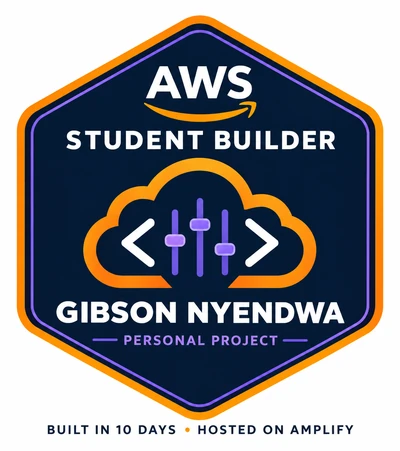

Websites and search · October to November 2026
This portfolio
Built for the AWS Student Builder Challenge in ten days, hosted on Amplify, with a mixing desk that plays my life.
- Status
- Live on AWS Amplify
- My role
- Everything: design, code, audio, AWS setup, write-up
Overview
A personal portfolio built from nothing for the AWS Student Builder Challenge, deployed on AWS Amplify Hosting from a public GitHub repository. The creative feature is a working mixing desk: seven faders, one per strand of my life, each playing a real loop and revealing a story. The build is documented day by day in the repository.
The problem
Show who I am to judges and employers in a way a CV cannot, while learning AWS properly rather than reading about it.
Approach
- Plain HTML, CSS and JavaScript so every line is mine to read and debug.
- AWS account secured first: root MFA, an admin user, a budget alert.
- Amplify Hosting connected to the repository so every push deploys.
- Six CC0 loops from Freesound, licence-checked on each asset page, credited in the repository.
What it looks like

Tools
Outcomes
- Live on AWS Amplify with continuous deployment
- Day-by-day build log and a setup guide anyone can follow
What I learned
A budget is an alert, not a cap. A public repository is redistribution. Git only knows the folder you are standing in.